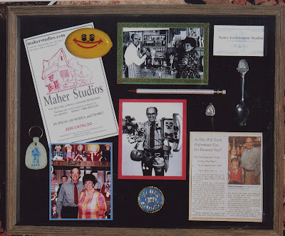

Product display?
3/17/2009
Question: I'm wondering if I may be able to see what you have available in person. That is, could I meet you and see your vent figures in person? I promise not to bug you or take a lot of your time.
* * * * * *
Answer: While I do meet with people over a cup of coffee, I do not have products or figures on display anywhere. I sell only from http://www.maherstudios.blogspot.com/ and eBay. In fact, if you walked through our home you would see no evidence that a ventriloquist lived here other than the shadow box of Maher Studios mementos (given to us as a gift by Joy, our daughter) which hangs on the wall next to our front door. For over 30 years I lived with and surrounded by ventriloquist products, so when we moved into a much smaller house upon retirement I was ready for a change in surroundings. :)
